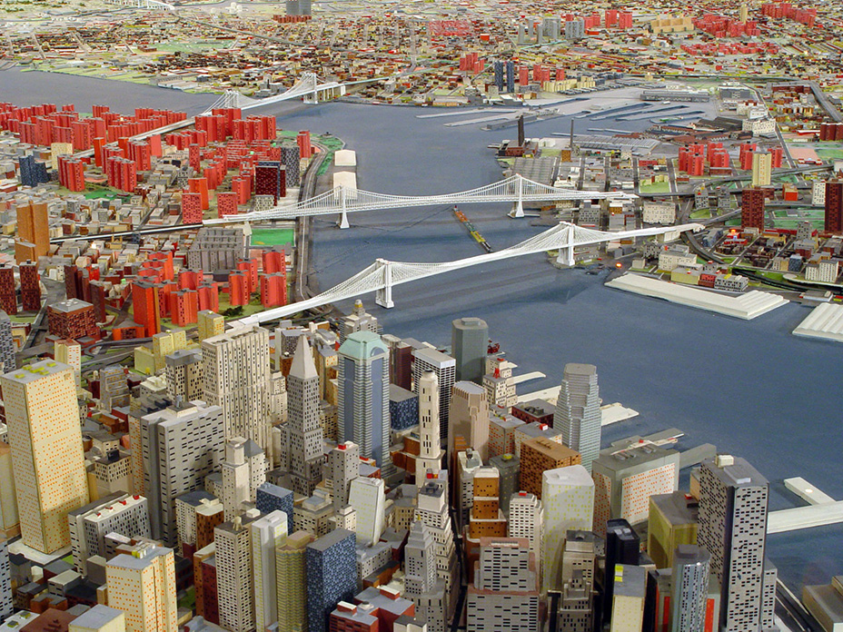
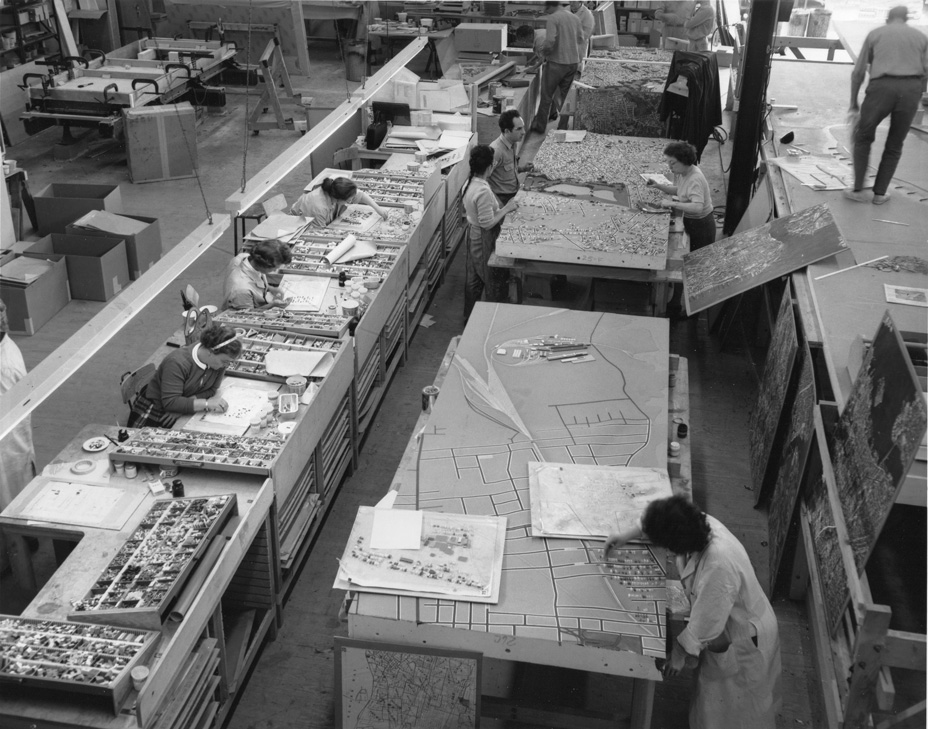
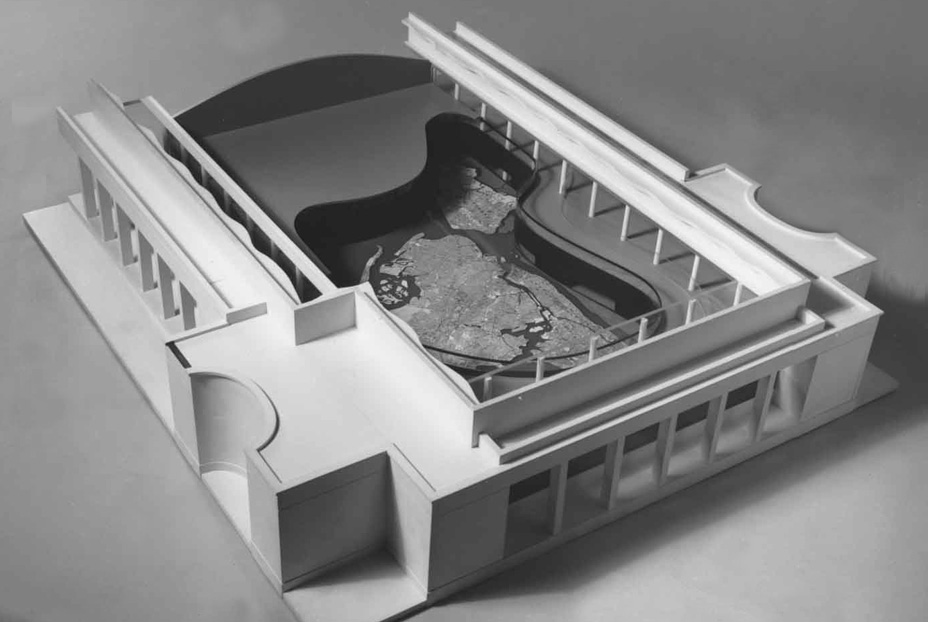
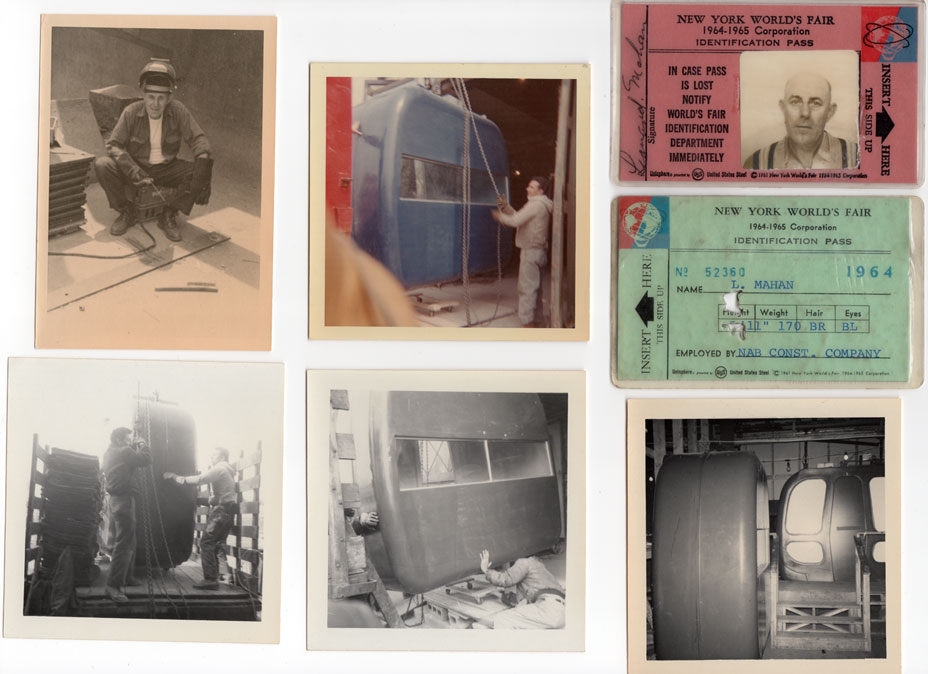

About the Panorama
The Panorama of the City of New York is the jewel in the crown of the collection of the Queens Museum and a locus of memory for visitors from all over the globe. Conceived as a celebration of the City's municipal infrastructure by urban mastermind and World's Fair President Robert Moses for the 1964/65 Fair, the Panorama was built by a team of more than 100 people working for the great architectural model makers Raymond Lester & Associates over the course of three years.
View of Lower Manhattan and New York Harbor on the Panorama of the City of New York.
Lester was familiar with building larger-than-life model environments, having worked with Norman Bel Geddes as an artist, designer and fabricator for the 1939/40 New York World's Fair, and later, on other large scale models of civic projects for Moses. In planning the model, Lester referred to aerial photographs, Sanborn fire insurance maps, and a range of other City material as the Panorama had to be accurate, with the initial contract demanding less than one percent margin of error between reality and the “world's largest scale model.” Comprising an area of 9,335 square feet and built to a scale of 1:1200 where one inch equals 100 feet, the Panorama is a metropolis in miniature. Each of the city's 895,000 buildings constructed prior to 1992 and every street, park and some 100 bridges are represented and assembled onto 273 individual sections comprising the 320 square miles of New York City. In this miraculously scaled cityscape, the borough of Manhattan measures a seemingly vast 70 x 15 feet and the Empire State Building is a towering 15 inches tall while the Statue of Liberty is only 1–7/8 inches in height. Long Island and New Jersey peek onto the model as black shadowy masses to the east and west.
Overview of Lester & Associates workshop, 1962. Collection of the Queens Museum; Gift of Lester & Associates.
When introduced in 1964, the Panorama's special features included a continuous lighting cycle that went from dawn to dusk to night. In addition, an automated program of 3,172 colored lights highlighted the City's municipal buildings: police precincts, firehouses, schools, hospitals, courthouses, libraries, public housing projects, as well as water, gas and electric stations. Black light fixtures mounted a few feet above the surface of the model illuminated trees and grounds of the City's parks and the windows of Manhattan's skyscrapers, all painted with phosphorescent paints that glowed green in the “night” cycle. Other special effects in the Panorama included moving airplanes that took off and landed at LaGuardia Airport every few minutes. The original materials used to construct the Panorama itself are a sign of the times in which it was built–sculpted urethane foam on Formica flakeboard mounted on wood. The buildings were constructed of wood, plastic and hand painted paper, and the bridges of etched brass. Ongoing building additions are made by architectural model makers of laser cut/etched acrylic generated from computer aided designs.
Model of the New York City Pavilion with the roof removed to show the location of the Panorama, 1961
The Panorama was one of the most successful attractions at the ‘64 Fair with millions enjoying what was billed as an indoor helicopter tour of New York. The 9 minute ride provided a “God's eye” view of the complex topography of the five boroughs and their waterways, allowing sight-seers to view the city at sea level and from a simulated 20,000 foot elevation. The “helicopters,” molded plastic tracked cars that encircled the model, also came with a guided tour, “The City of Opportunity,” read by broadcast legend Lowell Thomas. The ride was a bargain at 10 cents per person while the design and construction of the entire Panorama cost $672,662.69 in 1964, the equivalent of approximately $5 million today.
After the Fair the Panorama and helicopter ride remained open to the public through 1967, its originally planned use as an urban planning tool seemingly forgotten. To keep up with the rapidly evolving development of the city, updates were accurately recreated in the model by Lester's team in 1967, 1968, 1969 and 1974. Though the Queens Museum opened in 1972, only sporadic changes were made in the intervening years solely due to donations from architects and developers. During the 1980s boom in construction, models of the AT&T (Sony), Citicorp and other buildings were donated and placed on the model, though most public works and city projects were not included.
Polaroid of the Panorama car delivery and installation and daily work passes of Leonard Mahan who worked welding the infrastructure supporting the Panorama ride prior to the fair's opening. Mahan continued working in the New York City Pavilion during and after, maintaining the ride for 3 years after the fair's closing. Collection of the Queens Museum; Gift of Neil Smith.